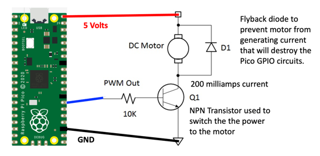

Using an Transistor to Control a Motor
Power Requirements for Motors
Motors need about 200 milliamps to work. But a microcontroller like the Raspberry Pi Pico only can switch about 18 milliamps. So we need a way to control more power.
The Pico has 26 general purpose input and output pins. However, each pin's power is designed to digitally communicate with other devices and has a limited current capacity of around 17 milliamps according to the Raspberry Pi Pico Datasheet Table 5. The solution is to either use the digital output signal to turn on and off a switch such as a transistor of to use a motor driver chip such as an L293D chip.
Basic Transistor Circuit
- Transistor NPN 2222A
- Diode: 1N1448
- Motor: 3-6 volt hobby motor

PWM Control
PWM Frequency
Set the frequency to 50Hz (one cycle per 20ms) and the duty value to between 51 (51/1023 * 20ms = 1ms) and 102 (102/1023 * 20ms = 2ms)
Sample Coder
1 2 3 4 5 6 7 8 | |